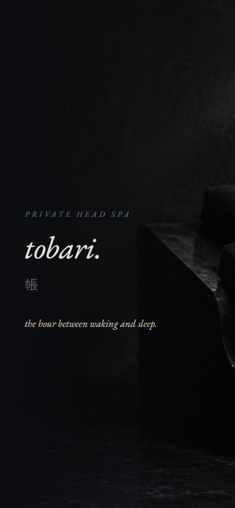
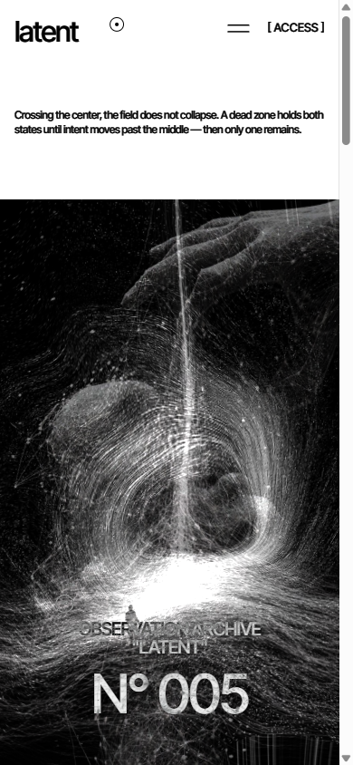

No4.DesignClub
← All Categories
No4.DesignClub
← All Categories
No4.DesignClub
← All Categories
No4.DesignClub
← All Categories
世界観を、誌面のように組む。企画・コピー・デザイン・実装まで一貫したエディトリアルLP。
検索エンジンだけでなく、AIの回答にも拾われる構造設計にも対応。
大須の実在店舗。RAW. REAL. UNFILTERED. を掲げるNY Gallery Bistro。ブランディングからSNSまで一貫担当。


「男に惚れろ。」を掲げたキャンペーンサイト。ホストクラブの世界観を、ハイブランド誌の文法で組んだ多ページ・エディトリアル。
実際のサイトを見る ↗ホストクラブ業界のWebサイトは、扇情的な演出とテンプレート的な作りに寄りがちで、「よくあるホストクラブのLP」という印象を脱するのが難しい。CREATE GROUPが狙うのは、女性客の来店動機・ホストの入店/移籍動機・在籍スタッフの帰属意識という3つの異なる層に、同じ1つのサイトで訴求すること。
しかし業界内の文法をなぞる限り、どの層にも「あるある」以上の印象は残せない。参照点を業界の外に置く必要があった。
CREATE GROUPには既に「男に惚れろ。」という強いキャンペーンコピーと、トラック広告で実際に使用された高品質な写真・映像素材があった。この資産を単なる掲載素材として扱うのではなく、ハイブランドのキャンペーンサイトと同じ文法で再構成することで、業界の外側にある信頼性の物差しをそのままWeb体験に持ち込む戦略を取った。
参照したのはLando Norris公式サイト（ライムグリーン1色アクセント×ダーク×大胆な余白）、Utah Jazz「Purple is Back」（黒白ミニマル×キネティックタイポ）、Slosh Seltzer（カーソル追従インタラクション）。いずれもホストクラブとは無関係な、ハイブランド/海外キャンペーンサイトの文法。スタッフ自身に「これを自分たちで作れるのか」と驚かれる完成度を目標に据えた。
装飾を積み重ねるのではなく、絞ることでラグジュアリー感を作る。ゴールドは背景やベタ塗りに使わず、写真への薄いデュオトーン・1pxの細い線・CTAボタンのみに使用箇所を限定。「驚きの仕掛け」も全部盛りにせず、スクロール連動のキネティックタイポグラフィと、カーソル追従の金の光の粒子演出の2つだけに絞り込んだ。


見出し文字がスクロールに連動して立ち上がるキネティックタイポと、カーソル/指の動きに追従する金の光の粒子演出。エフェクトを積み重ねるのではなく、この一つの動きだけを徹底することで「派手」ではなく「精度」で魅せる。
企画・コピーライティング・ビジュアルディレクション・実装まで、外部発注を挟まずひとつのチームで最後まで担当。シングルページ構成から多ページ・エディトリアル構成へ、素材が揃うたびに反復しながら完成度を積み上げていった。
「暗さ」を商品として設計した、ドライヘッドスパ専門サロンのブランド構築とLP。リラクゼーション業界の記号を、すべて降りるところから始めた。
リラクゼーション業界のWebサイトは、明るい白木の内装、微笑むスタッフ、観葉植物、手書き風の丸ゴシック——ほぼ全店が同じ記号を共有している。その結果、60分5,000円の店と60分15,000円の店が、画面の上ではほとんど同じ顔になってしまう。
単価の高いプライベートサロンにとって、これは致命的だった。価格を上げる根拠が、写真にも言葉にも一つも写っていない。必要だったのは「癒しをもっと丁寧に伝えること」ではなく、癒しの記号そのものを降りることだった。
TOBARIが商品として定義したのは、施術の技術でも、終わったあとの爽快感でもない。眠りに落ちる直前——意識の輪郭がほどけていく、あの数分間だけを切り出して商品にした。「夜の帳が降りる」の帳を、そのままブランド名に据えている。
売るものが決まると、内装も、照明も、接客の言葉数も、Webサイトも、すべて一つの基準で判断できるようになる。「その数分間に近づくか、遠ざかるか」。この判断基準がブランドの中心にあること自体が、価格の根拠になる。
参照点はスパでもサロンでもなく、美術館の暗室展示と、能舞台の照明。対象を煌々と照らすのではなく、見えるぎりぎりまで光量を落として輪郭だけを残す文法。サイト全体の明度を意図的に下げ、写真は被写体の1割ほどしか照らさない。
「明るく・清潔で・親しみやすい」という業界標準の逆を、すべての判断で選んだ。入りやすさを捨てる代わりに、ここでしか得られないを取る。誰にでも向いている店ではないことを、最初の1画面で正直に伝える設計にしている。
色は墨・藍鼠・月白の3色のみ。ゴールドも差し色も使わず、画面内の唯一の「明るさ」は写真の中の一条の光だけに担わせた。ブランドごとに同じ色を当てないことが、世界観を借り物にしない条件になる。
英字はEB Garamondの小文字イタリック。大文字の主張を避け、囁く音量に字形を合わせる。日本語はNoto Sans JPのweight 100を広い字間で組み、文字そのものが呼吸しているように見せた。

スクロールへの反応を意図的に遅らせ、要素は「現れる」のではなく「滲み出る」。フェードは0.2秒ではなく1.2秒。ホバーで拡大する要素は一つも置かず、代わりに触れた場所の周囲がわずかに明るくなるだけにした。
例外は予約ボタンだけ。静けさの中に、はっきり反応する出口を一つだけ置く。サイトを見ている数分間の呼吸そのものを、施術の速度に合わせて設計している。
ネーミング、コンセプト定義、コピーライティング、写真の方向づけ、デザイン、実装まで、外部発注を挟まずひとつのチームで通した。
「帳」という一語を決めた時点で、暗い写真も、遅いモーションも、少ない色数も、すべて自動的に決まっている。設計の順番を守ることが、制作物のブレを消す唯一の方法になる。
動画ファイルを一切使わない、リアルタイム生成のインタラクティブ・ヒーロー。AI/テクノロジー領域のコンセプトLPで、「貼った動画が再生される」から「その場で計算されて動き続ける」への切り替えを試した実験作。
AI/テック系のプロダクトLPは、ヒーローにストック映像やAI生成のループ動画を敷くのが定番になっている。だが動画には必ずループの継ぎ目が来る——見ている人の動きには一切反応せず、同じ数秒を繰り返すだけの背景に成り下がる。
問い直したのは「動画ファイルを一つも使わずに、見るたびに二度と同じ瞬間が訪れないヒーローは作れるか」ということだった。
ブランド名「latent」は、生成AIモデルの核である"latent space"（潜在空間）と、二つの思考の間にある余白という二重の意味を持たせた造語的な使い方をしている。素材は瞑想する人影・意識と光の糸で編まれる人体・ブラックホール状の渦など、AI/意識をテーマにしたモノクロビジュアル群。装飾ではなく、そのまま演出のロジックを駆動する原材料として扱った。
採用したのは3層の掛け合わせ。①GLSLシェーダーによる常時変形——ノイズを重ねたフロー場が画面全体を絶えず揺らし、どの瞬間も同じ形にならない。②深度パララックス——奥/中/手前の3レイヤーがカーソル位置に応じて別々の速度でズレ、平面の画像に奥行きを生む。③加算（スクリーン）合成——黒い背景同士は打ち消し合い、光の筋だけが層を越えて重なり合う。この3つは動画の代わりであると同時に、素材にある「意識の糸が編まれる」というモチーフそのものの表現にもなっている。
NO4の通常仕様であるダーク×ゴールドをこの作品では意図的に外し、完全な白黒のみで構成した。素材自体がモノクロの生成アートであるため、色を足すとかえって世界観と競合すると判断した結果。UI文字はすべてmix-blend-mode: exclusionを敷き、背景がどれだけ変化し続けても常に可読性を保つ。

カーソルを動かすと3レイヤーが深度に応じて視差移動し、あわせて各層のノイズフローの位相もずれる。だが主役はカーソルではない——フロー場は常時・全面で駆動しており、静止していても画面は波打ち続ける。タッチ端末ではカーソルの代わりに緩やかな円軌道の自動ドリフトが同じ役割を担い、指で触れなくても常に生きた状態を保つ。
最初の実装はカーソルのX位置で2枚の画像をクロスフェードするだけの案だった。動かして見せたところ「効いてる部分だけ動いてるけど、そうじゃない」というフィードバックが返り、画面全体が常時変形するGLSLの歪みシェーダーに作り替えた。
それでもまだ「1枚の写真が出てるだけ」という評価だった。参照に挙がったのがShopify Editions Winter '26のヒーロー——複数レイヤーがカーソルでズレて奥行きを見せる視差演出。この技術を解剖し、「常時変形するシェーダー」と「深度パララックス」を1つの画面に統合したのが最終形になっている。仮説→実機確認→評価→作り直し、を1セッション内で3周した結果の作品。
架空エナジードリンクブランドの視覚特化ショーケース。PC向けの表現に振り切った、デザインの実験作。

架空フレグランスブランドのエディトリアルLP。静けさと余白で「香り」を視覚化した、もう一つの実験作。